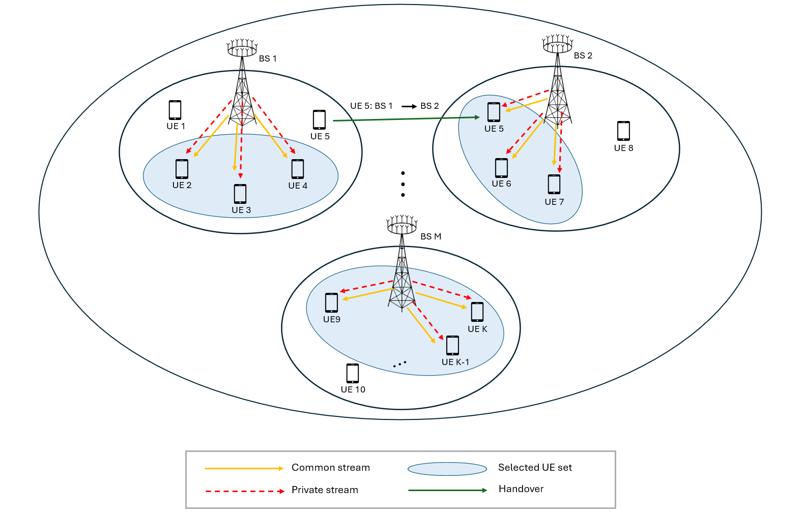
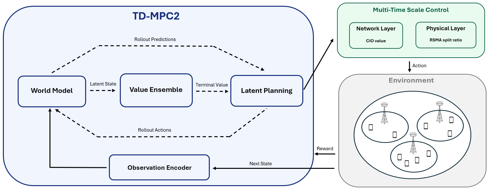

Chapters 3-4
연구 내용
3. 시스템 모델
3.1 네트워크 및 채널 모델
다중 셀 5G MIMO 환경을 가정하고, 이동 사용자와 셀 간 간섭이 동시에 존재하는 시나리오를 구성했다. 채널은 3GPP 기반 모델과 불완전한 CSIT 조건을 반영해 실제적인 전송 환경에 가깝게 설정했다.

3.2 저복잡도 사용자 선택 기반 RSMA 전송 모델
제안 기법은 모든 사용자를 동시에 최적화하기보다, 사용자 선택 단계에서 PF 지표와 채널 공간 직교성을 함께 고려한다. 이를 통해 공통 스트림 복호 부담을 줄이면서도 자원 집중으로 인한 성능 왜곡을 완화한다.
3.3 A3 기반 핸드오버 모델
네트워크 계층에서는 A3 기반 핸드오버 규칙과 CIO를 이용해 접속 셀을 조정한다. 이 과정은 사용자 분산과 실패 핸드오버 억제를 동시에 고려하는 제어 변수로 사용된다.
3.4 처리량 및 부하 모델
성능 평가는 단순 전송률이 아니라 사용자 처리량과 셀 간 부하 편차를 함께 본다. 이를 통해 전송 효율과 네트워크 균형을 동시에 반영하는 목적 구성이 가능해진다.
3.5 문제 정의
최종적으로 본 연구는 처리량을 높이면서도 부하 불균형을 줄이는 공동 최적화 문제를 정의한다. 즉, 개별 링크 성능보다 네트워크 전체 자원 사용의 균형을 함께 고려하는 형태다.
4. TD-MPC2 기반 자원 최적화 프레임워크
4.1 멀티 타임스케일 교차 계층 제어 구조
RSMA 분할 비율은 빠르게 조정하고, CIO는 상대적으로 느린 주기로 갱신하는 멀티 타임스케일 구조를 사용했다. 이는 두 제어 변수의 시간적 특성을 분리해 학습 안정성과 제어 효율을 함께 확보하기 위한 구성이다.

4.2 MDP 정식화
멀티 타임스케일 네트워크 제어 문제는 중앙집중형 에이전트가 전역 상태를 관측하고, 다중 셀의 제어 변수를 동시에 결정하는 MDP로 구성된다.
4.2.1 상태 공간
상태는 셀 부하, 부하 변화율, 큐 상태, 분할 비율, CIO, 사용자 분포를 포함하는 전역 벡터로 정의한다.
4.2.2 행동 공간
행동은 각 셀의 RSMA 분할 비율과 CIO를 결합한 벡터로 구성되며, 두 계층 제어를 동시에 반영한다.
4.2.3 보상 함수
보상은 처리량과 부하 균형을 함께 반영해 두 성능 지표의 절충점을 찾도록 설계했다.
4.3 TD-MPC2 알고리즘
TD-MPC2는 잠재 공간에서 환경의 전이를 예측하고, 계획 기반 추론을 통해 장기적인 제어 성능을 확보하는 모델 기반 강화학습 구조다.
4.3.1 월드 모델
관측 상태를 저차원 잠재 표현으로 사상한 뒤, 다음 잠재 상태와 보상을 예측하는 세계 모델을 학습한다.
4.3.2 잠재 공간 기반 계획
학습된 세계 모델을 이용해 유한 시간 구간의 미래 보상을 예측하고, 기대 누적 할인 보상을 최대화하는 방향으로 행동을 선택한다.
4.3.3 네트워크 최적화 및 파라미터 갱신
학습 과정에서는 일관성 손실, 보상 손실, 가치 손실을 함께 최소화하며 정책과 가치 추정을 동시에 갱신한다.